Core · Video walkthrough
Save, revise and finalize a Training record
Create a fictional record with the built-in Training form, verify a saved narrative revision and public attachment, finalize accurately, and inspect the first retained revision and record number.
Before you begin
- Use an authorized account in a fictional practice department where Records is already usable; honor any normal access or Protected Data verification gate.
- Use the built-in Training definition, a distinct software-only course/reference and a public plain-text handout; preserve other records and numbering settings.
- For this software exercise leave participants and unit response times empty, and attest only to the activity actually documented.
Chapters
- Identify the built-in Training record form
- Describe only the activity that actually occurred
- Keep optional unit response data truthful
- Save once and retain the actual draft identity
- Edit the same draft instead of creating another
- Verify the persisted narrative
- Attach a public handout and verify storage
- Attest to the bounded software record and finalize
- Open the actual first finalized revision
- Distinguish stored attachment metadata from the upload form
- Confirm the initial finalized record in the list
- Use the same record discipline across sectors
Watch the walkthrough
Step 1
Identify the built-in Training record form
In Records, the New Record form has Training selected in Definition. This built-in form provides course information, a narrative, participant rows and optional unit times. Our fictional Chicago Fire exercise demonstrates the record lifecycle. It does not represent a physical training session or attendance. Enter a distinct Course, Training Only, Records Software Entry, followed by the exercise date. The Course code is Academy Rec Twenty-Nine, and External ID carries a separate exercise reference. Location says Fictional Software Workspace. Review Start and the empty End before continuing.
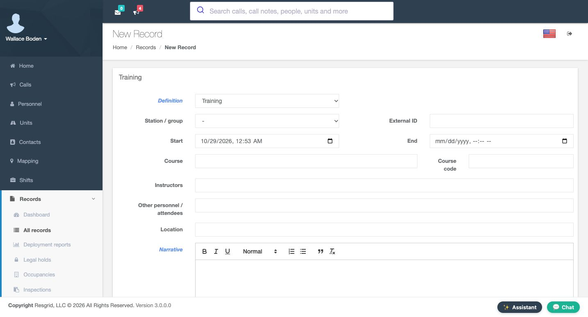
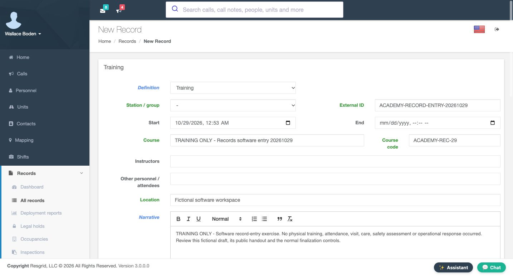
Practice
On New Record, confirm Training is selected before preparing a distinctly named software exercise.
Step 2
Describe only the activity that actually occurred
The initial Narrative explains that this is a software record-entry exercise and that no physical training, attendance or operational response occurred. Write enough context for someone reading the record later. Below it, Participants provides a person selector, an optional assigned unit and a role. We leave the participant unselected. A blank chooser is not an attendance entry, and adding a name would make a different factual claim. The exercise therefore keeps this section empty.
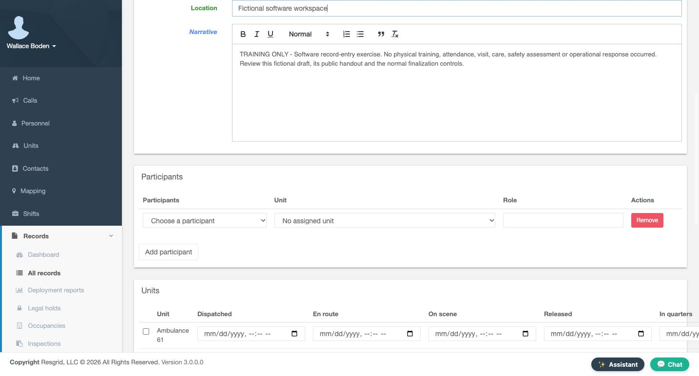
Practice
Write an explicit software-only narrative and leave the participant chooser empty.
Step 3
Keep optional unit response data truthful
The Units section offers a checkbox for each unit and columns for Dispatched, En route, On scene, Released and In quarters. These fields belong to the record’s response data. They are not instructions to change a unit’s live status. We leave all unit selections and time entries untouched because no response happened. Review the displayed rows and preserve those empty selections rather than entering invented times to make a record appear complete.
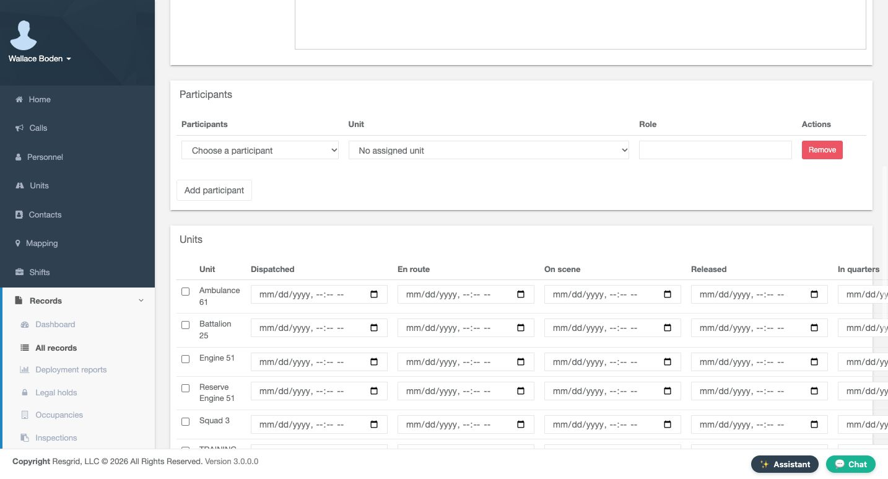
Practice
Inspect the unit/timestamp columns without selecting a unit or entering response times.
Step 4
Save once and retain the actual draft identity
At the bottom, no file is selected and the attestation is unchecked. Choose Save draft to retain an editable record for review. The separate Save and finalize control is visible, but this first step saves the draft. The fresh View Record page shows Training in Draft, with reference D, Y, X, S, Nine, Three and no final record number. Author and Owner are Wallace Boden. Station and group resolved to Command after the initial field was left blank. Read the returned group and keep the actual reference before proceeding.
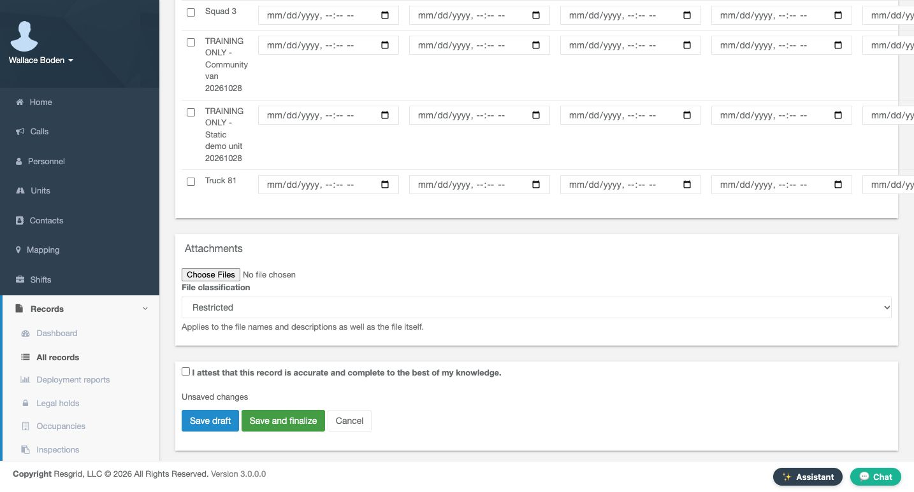
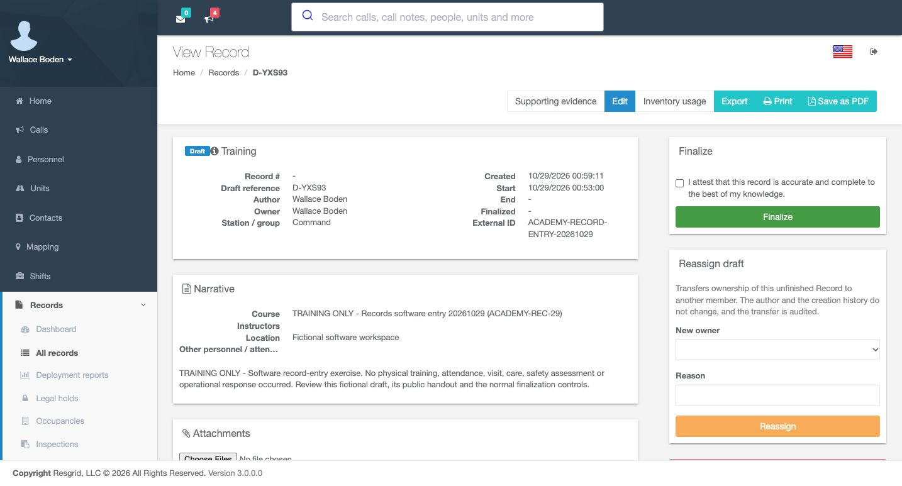
Practice
Save the distinct draft once and retain its returned reference before any further editing.
Step 5
Edit the same draft instead of creating another
Use Edit on this saved draft to revise its content. Continue with the existing record rather than opening another New Record form. The revised Narrative states that this is software record entry, no physical training or operational response occurred, and no personnel or unit times were added. Course, code and Location remain the exercise values. Read the complete text in the visible editor after typing; the content on screen must match the intended statement before you rely on it.
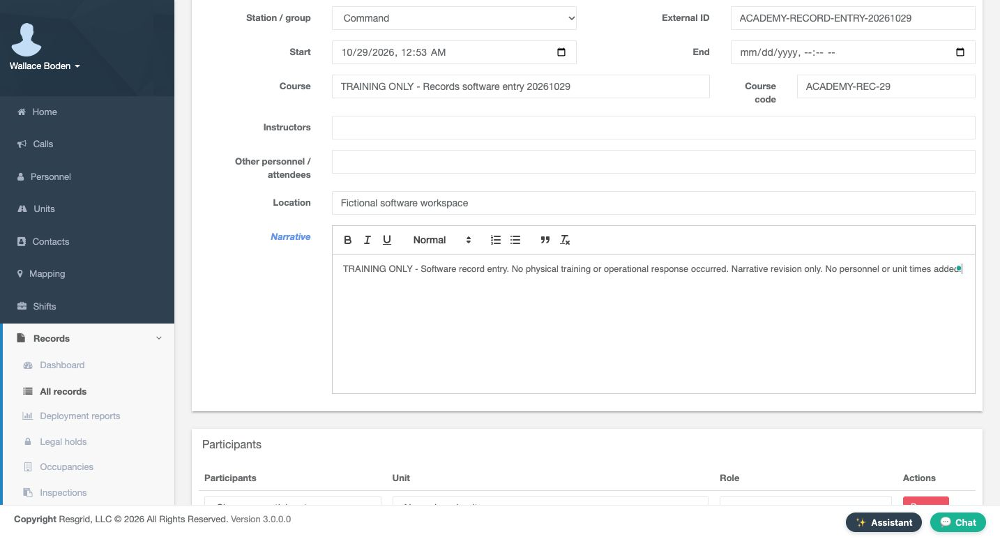
Practice
Use the saved draft’s Edit control and enter a concise, truthful narrative revision.
Step 6
Verify the persisted narrative
A fresh View Record readback now contains the corrected narrative on the same draft and the same reference. It remains Draft, with no final number. Checking a separate readback is valuable even when a draft supports automatic saving: text visible in an editor is not sufficient evidence that the intended version is stored. If the result is unexpected, inspect this existing draft before repeating a create action. Here the software-only revision is present and ready for the next step.
Practice
Reopen View Record and compare the stored narrative and draft reference with your intended revision.
Step 7
Attach a public handout and verify storage
In Attachments, choose the public software handout and select Unrestricted operational content in File classification. Use this classification because the file contains only the fictional exercise. Then use Add attachment. After a fresh readback, academy-record-entry-handout dot text appears in the attachment list with three hundred fifty-eight bytes. The upload selector has reset to Restricted for another file. That reset does not describe the file already stored. We will check the stored classification in the finalized revision, rather than inferring it from the new-upload control.
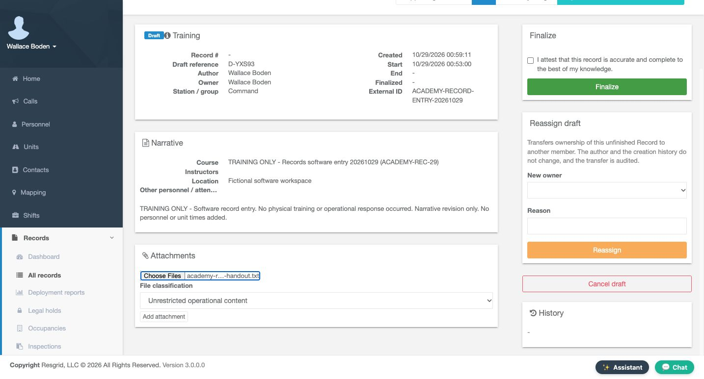
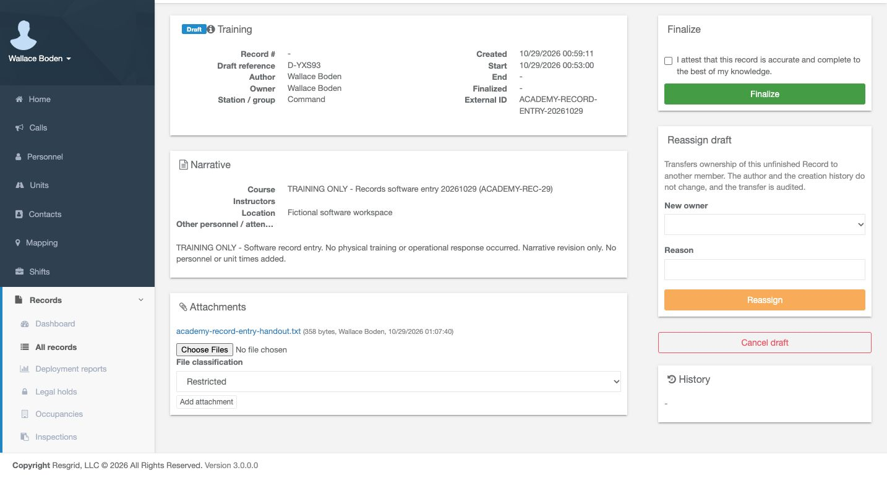
Practice
Upload the public software handout as Unrestricted operational content, then verify its stored filename.
Step 8
Attest to the bounded software record and finalize
Read the narrative and stored handout before signing. The attestation says the record is accurate and complete to the best of your knowledge. In this exercise, accuracy means accurately documenting a software practice with no physical training or response. Check the attestation and use Finalize. The fresh result shows Finalized and the actual issued number, T R N, Twenty Twenty-Six, Zero Zero Zero Two. The draft reference remains. Amend is now available for later corrections; a finalized revision is preserved rather than overwritten by ordinary draft editing.
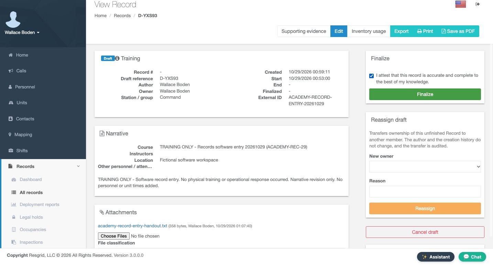
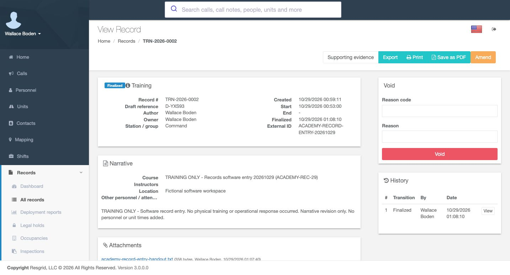
Practice
Review the software content and handout, then use the ordinary attestation and Finalize only when accurate.
Step 9
Open the actual first finalized revision
History now contains revision one, transition Finalized, with Wallace Boden and the recorded date. The handout remains listed. Use View on that history row to inspect what this first signature preserved. The resulting HTML page identifies the complete department record and revision one. Its Details section contains the Course, Course Code, Location and exact software-only Narrative. This gives a specific version to review, rather than relying only on the latest record header.
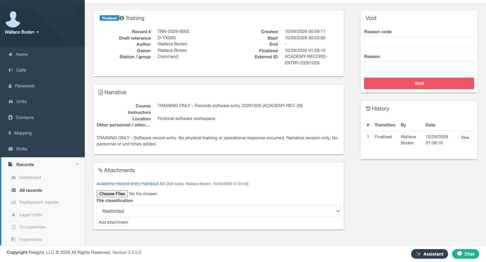
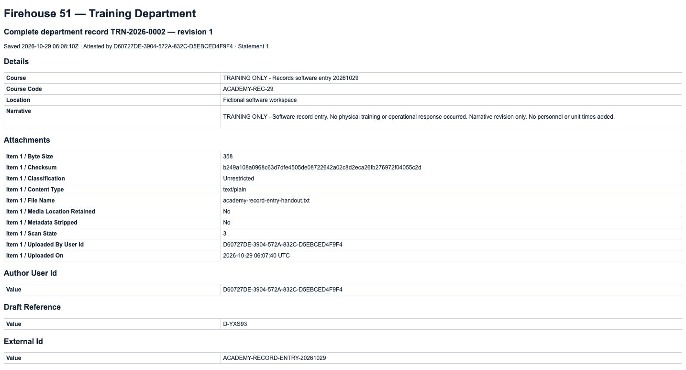
Practice
Use View on the first Finalized History row and inspect its retained course and narrative.
Step 10
Distinguish stored attachment metadata from the upload form
The same revision lists the handout’s filename, byte size, checksum and Unrestricted classification. This is the stored attachment metadata, separate from the reset chooser we saw earlier. The checksum matches the retained public handout. Farther down, Draft Reference, External Id and Record Number connect the original draft to the finalized record. Keep those identifiers together when reviewing an exercise or resolving a question about which version was signed.
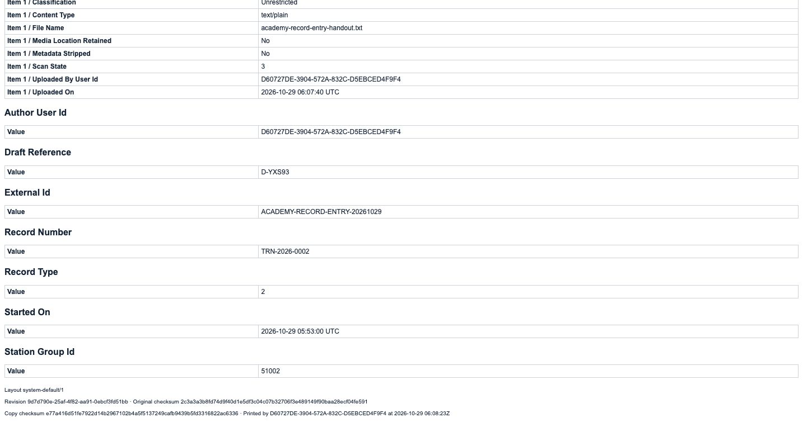
Practice
Read the revision’s stored file classification and compare the retained reference and record number.
Step 11
Confirm the initial finalized record in the list
Returning to Records shows the new finalized Training row alongside the earlier Work draft and older finalized Training example. Read the number, type, state and summary together to choose the intended row. The original Work draft remains D, Four Six Nine K P; the older Training record ends Zero Zero Zero One. This exercise created and finalized only its own entry. Leave the other records untouched, and use the actual issued number when finding this example again.
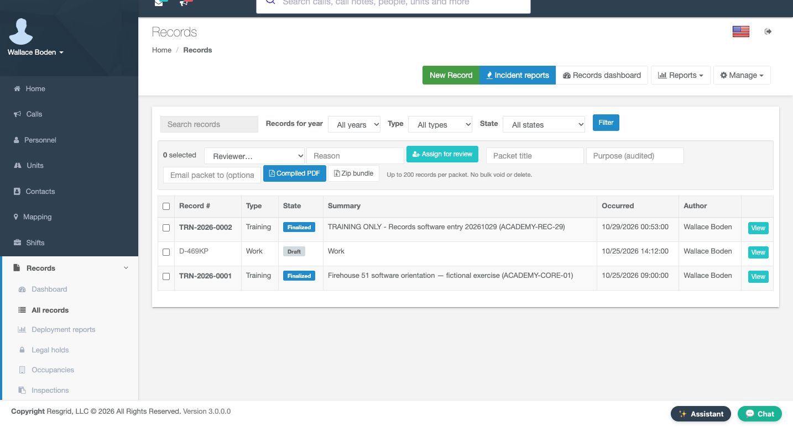
Practice
Identify the new finalized Training row while preserving the earlier Work and Training examples.
Step 12
Use the same record discipline across sectors
Chicago Fire can use this pattern for a software orientation record. Community care and mental-health teams can document an operational software exercise without client histories. Search-and-rescue teams can keep practice documentation distinct from a mission response. Security teams can retain a fictional platform exercise; wildland coordinators can document seasonal software familiarization; industrial teams can preserve a system-training example and public handout. Across all six settings, use accurate narrative, actual participants and times only when they occurred, a verified attachment, and the saved revision that supports the statement being reviewed.
Practice
Choose one sector and describe a truthful practice record without adding invented attendance or response data.
Examples for your department
- Fire / EMS
- Use a clearly labeled software orientation record with no fabricated attendance or response times; retain its draft identity and finalized revision.
- Community response
- Document an operational platform practice using fictional content and a public handout, without client histories or assessment claims.
- Search and rescue
- Keep software practice distinct from a mission response and preserve only actual participation/time data.
- Security
- Review a fictional platform-training entry and its signed version, preserving the record’s original identifiers.
- Wildland
- Document seasonal software familiarization with a truthful narrative and the actual saved revision rather than invented deployment activity.
- Industrial
- Retain a system-training software example, public attachment and first finalized version without treating it as proof of physical drills or credentials.
Transcript
Download transcriptRead the complete transcript
Save, revise and finalize a Training record Audience: authorized record authors, department administrators, record reviewers Identify the built-in Training record form In Records, the New Record form has Training selected in Definition. This built-in form provides course information, a narrative, participant rows and optional unit times. Our fictional Chicago Fire exercise demonstrates the record lifecycle. It does not represent a physical training session or attendance. Enter a distinct Course, Training Only, Records Software Entry, followed by the exercise date. The Course code is Academy Rec Twenty-Nine, and External ID carries a separate exercise reference. Location says Fictional Software Workspace. Review Start and the empty End before continuing. Practice: On New Record, confirm Training is selected before preparing a distinctly named software exercise. Describe only the activity that actually occurred The initial Narrative explains that this is a software record-entry exercise and that no physical training, attendance or operational response occurred. Write enough context for someone reading the record later. Below it, Participants provides a person selector, an optional assigned unit and a role. We leave the participant unselected. A blank chooser is not an attendance entry, and adding a name would make a different factual claim. The exercise therefore keeps this section empty. Practice: Write an explicit software-only narrative and leave the participant chooser empty. Keep optional unit response data truthful The Units section offers a checkbox for each unit and columns for Dispatched, En route, On scene, Released and In quarters. These fields belong to the record’s response data. They are not instructions to change a unit’s live status. We leave all unit selections and time entries untouched because no response happened. Review the displayed rows and preserve those empty selections rather than entering invented times to make a record appear complete. Practice: Inspect the unit/timestamp columns without selecting a unit or entering response times. Save once and retain the actual draft identity At the bottom, no file is selected and the attestation is unchecked. Choose Save draft to retain an editable record for review. The separate Save and finalize control is visible, but this first step saves the draft. The fresh View Record page shows Training in Draft, with reference D, Y, X, S, Nine, Three and no final record number. Author and Owner are Wallace Boden. Station and group resolved to Command after the initial field was left blank. Read the returned group and keep the actual reference before proceeding. Practice: Save the distinct draft once and retain its returned reference before any further editing. Edit the same draft instead of creating another Use Edit on this saved draft to revise its content. Continue with the existing record rather than opening another New Record form. The revised Narrative states that this is software record entry, no physical training or operational response occurred, and no personnel or unit times were added. Course, code and Location remain the exercise values. Read the complete text in the visible editor after typing; the content on screen must match the intended statement before you rely on it. Practice: Use the saved draft’s Edit control and enter a concise, truthful narrative revision. Verify the persisted narrative A fresh View Record readback now contains the corrected narrative on the same draft and the same reference. It remains Draft, with no final number. Checking a separate readback is valuable even when a draft supports automatic saving: text visible in an editor is not sufficient evidence that the intended version is stored. If the result is unexpected, inspect this existing draft before repeating a create action. Here the software-only revision is present and ready for the next step. Practice: Reopen View Record and compare the stored narrative and draft reference with your intended revision. Attach a public handout and verify storage In Attachments, choose the public software handout and select Unrestricted operational content in File classification. Use this classification because the file contains only the fictional exercise. Then use Add attachment. After a fresh readback, academy-record-entry-handout dot text appears in the attachment list with three hundred fifty-eight bytes. The upload selector has reset to Restricted for another file. That reset does not describe the file already stored. We will check the stored classification in the finalized revision, rather than inferring it from the new-upload control. Practice: Upload the public software handout as Unrestricted operational content, then verify its stored filename. Attest to the bounded software record and finalize Read the narrative and stored handout before signing. The attestation says the record is accurate and complete to the best of your knowledge. In this exercise, accuracy means accurately documenting a software practice with no physical training or response. Check the attestation and use Finalize. The fresh result shows Finalized and the actual issued number, T R N, Twenty Twenty-Six, Zero Zero Zero Two. The draft reference remains. Amend is now available for later corrections; a finalized revision is preserved rather than overwritten by ordinary draft editing. Practice: Review the software content and handout, then use the ordinary attestation and Finalize only when accurate. Open the actual first finalized revision History now contains revision one, transition Finalized, with Wallace Boden and the recorded date. The handout remains listed. Use View on that history row to inspect what this first signature preserved. The resulting HTML page identifies the complete department record and revision one. Its Details section contains the Course, Course Code, Location and exact software-only Narrative. This gives a specific version to review, rather than relying only on the latest record header. Practice: Use View on the first Finalized History row and inspect its retained course and narrative. Distinguish stored attachment metadata from the upload form The same revision lists the handout’s filename, byte size, checksum and Unrestricted classification. This is the stored attachment metadata, separate from the reset chooser we saw earlier. The checksum matches the retained public handout. Farther down, Draft Reference, External Id and Record Number connect the original draft to the finalized record. Keep those identifiers together when reviewing an exercise or resolving a question about which version was signed. Practice: Read the revision’s stored file classification and compare the retained reference and record number. Confirm the initial finalized record in the list Returning to Records shows the new finalized Training row alongside the earlier Work draft and older finalized Training example. Read the number, type, state and summary together to choose the intended row. The original Work draft remains D, Four Six Nine K P; the older Training record ends Zero Zero Zero One. This exercise created and finalized only its own entry. Leave the other records untouched, and use the actual issued number when finding this example again. Practice: Identify the new finalized Training row while preserving the earlier Work and Training examples. Use the same record discipline across sectors Chicago Fire can use this pattern for a software orientation record. Community care and mental-health teams can document an operational software exercise without client histories. Search-and-rescue teams can keep practice documentation distinct from a mission response. Security teams can retain a fictional platform exercise; wildland coordinators can document seasonal software familiarization; industrial teams can preserve a system-training example and public handout. Across all six settings, use accurate narrative, actual participants and times only when they occurred, a verified attachment, and the saved revision that supports the statement being reviewed. Practice: Choose one sector and describe a truthful practice record without adding invented attendance or response data. Examples for your department Fire / EMS: Use a clearly labeled software orientation record with no fabricated attendance or response times; retain its draft identity and finalized revision. Community response: Document an operational platform practice using fictional content and a public handout, without client histories or assessment claims. Search and rescue: Keep software practice distinct from a mission response and preserve only actual participation/time data. Security: Review a fictional platform-training entry and its signed version, preserving the record’s original identifiers. Wildland: Document seasonal software familiarization with a truthful narrative and the actual saved revision rather than invented deployment activity. Industrial: Retain a system-training software example, public attachment and first finalized version without treating it as proof of physical drills or credentials.